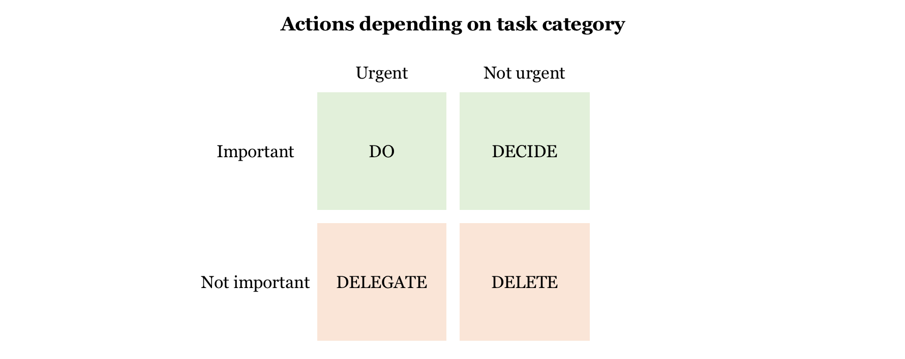

You may have a million things on your to-do list. What’s to be done first?
An effective way of prioritising tasks is to categorise them in terms of their importance and urgency, then choose how to do them based on their category.
A task is important if it contributes to your long-term goals.
If your goal is to write a book, then doing research for it is ‘important’. Fixing the toilet is ‘not important’, however urgent it may be. To finish reading an unrelated book is ‘not important’.
A task is urgent if not doing it has immediate consequences.
There is often a tension between what is important and what is urgent. If we do not have a clear idea of whether a task is primarily important or urgent, we may run out of time to do everything we want to do and end up not making much progress on our long-term goals. However, we cannot simply neglect urgent things either.
To decide on what to focus on:
If we are too worried about having too many urgent tasks, then busyness can make us frenzied, leading to a blinding effect on our ability and mental capacity to prioritise, and so reducing how effectively we work. This highlights the importance of taking a break from busyness, re-assessing the situation, re-prioritising and then going back to work.
There was a time when I was overwhelmed with all the things I had set out to do. However, applying the ‘important/urgent’ classification to my to-do list showed me how many of those tasks were not important nor urgent at all. It took some emotional struggling to cross them off without doing them, but afterwards, I felt a lot less stressed, had more time on my hands and a renewed clarity towards my long-term goals – a far better outcome.
What are your long-term goals? From there, you can work out what is truly important to focus on and then figure out how to structure your time to reach them. After all, life is too short not to enjoy it!